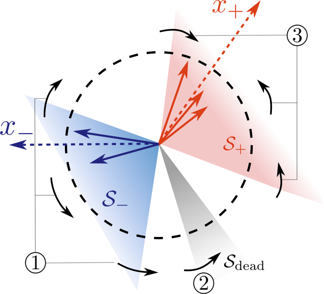
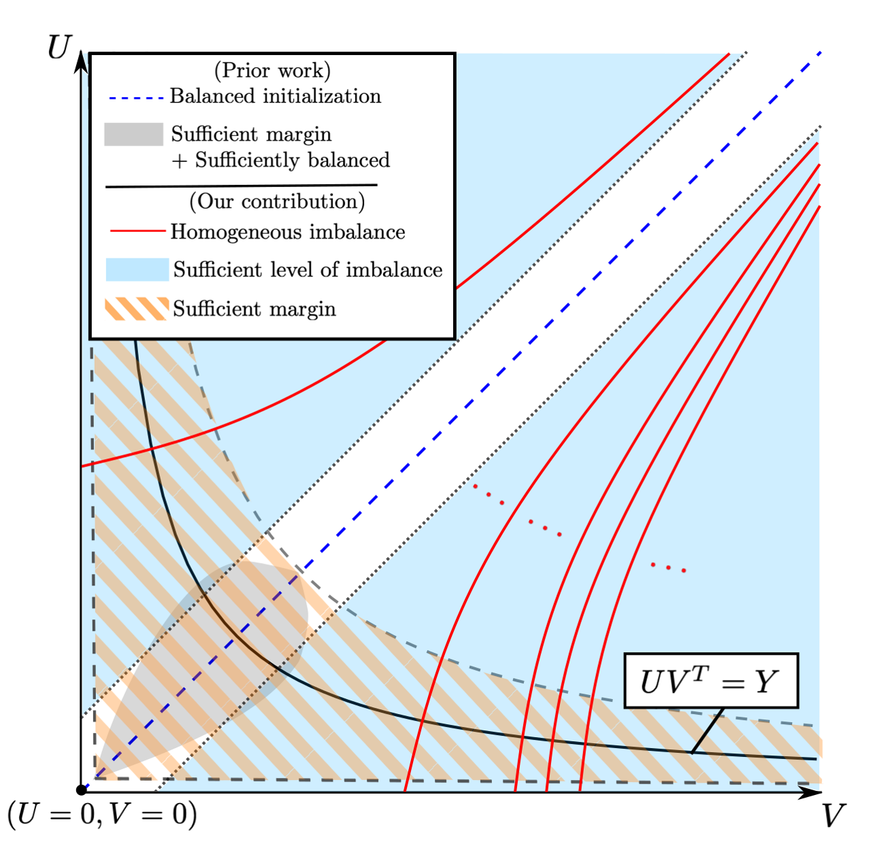
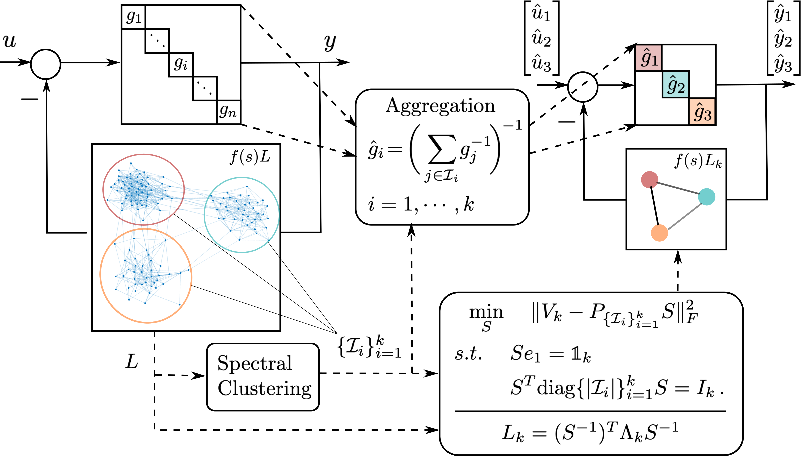
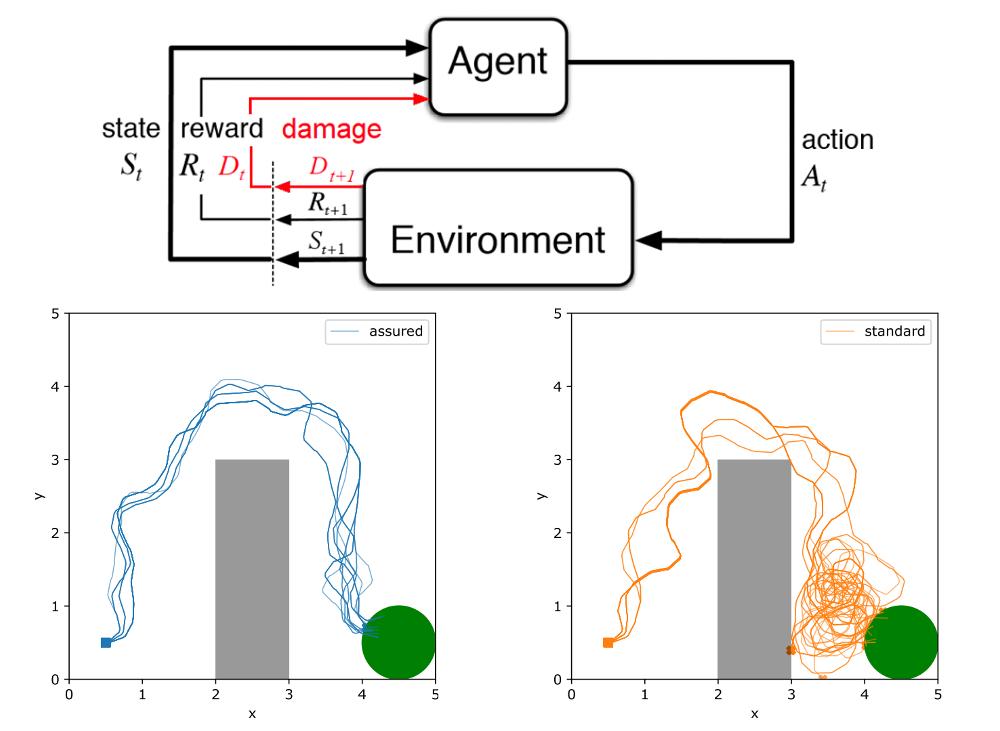

Projects
Introduction to my research projects
Ongoing
Neural Alignment in Shallow Networks with Small Initialization

Many theoretical studies on neural networks attribute their excellent empirial performance to the implicit bias or regularization induced by first-order algorithms when training networks under certain initialization assumptions. In particular, it is widely known that sparsity/simplicity-inducing biases can often be achieved by small initialization. This has motivated our investigation into the problem of training a two-layer ReLU network using gradient flow with small initialization. We consider a training dataset with well-separated input vectors: Any pair of input data with the same label are positively correlated, and any pair with different labels are negatively correlated. Our analysis shows that, during the early phase of training, neurons in the first layer try to align with either the positive data or the negative data, depending on its corresponding weight on the second layer. A rigorous analysis of the neurons' directional dynamics allows us to provide an explicit upper bound on the time it takes for all neurons to achieve good alignment with the input data, which depends on the number of data points and how well the data are separated. Our lastest work has studied such alignment under more general data distribution and understanding the effect of such bias in broader aspects of ML, such as robustness, fairness, etc..
Related work:
Related work:
- H. Min and R. Vidal, “Can Implicit Bias Imply Adversarial Robustness?,” the 41th International Conference on Machine Learning (\textbf{ICML}), 2024, to appear.
- H. Min, E. Mallada, and R. Vidal, “Early Neuron Alignment in Two-layer ReLU Networks with Small Initialization,” in 12th International Conference on Learning Representations (ICLR), 2024, to appear. [URL] [PDF] [POSTER] [SLIDES]
Convergence and Implicit Bias of Overparametrized Neural Networks

Neural networks trained via gradient descent with random initialization and without any regularization enjoy good generalization performance in practice despite being highly overparametrized. A promising direction to explain this phenomenon is to study how initialization and overparametrization affect the convergence and implicit bias of training algorithms. We present a novel analysis of the convergence and implicit bias of gradient flow for linear networks, which connects initialization, optimization, and overparametrization. Our results show that sufficiently overparametrized linear networks are guaranteed to converge to the min-norm solution when properly initialized. Moreover, our convergence analysis is generalized to deep linear networks under a general loss function.
Related work:
Related work:
- H. Min, S. Tarmoun, R. Vidal, and E. Mallada, “Convergence and implicit bias of gradient flow on overparametrized linear networks,” 2023, in preparation.
- H. Min, R. Vidal, and E. Mallada, “On the convergence of gradient flow on multi-layer linear models,” in Proceedings of the 40th International Conference on Machine Learning (ICML), vol. 202, PMLR, Jun. 2023, pp. 24 850–24 887. [URL] [PDF] [POSTER] [SLIDES]
- Z. Xu, H. Min, S. Tarmoun, E. Mallada, and R. Vidal, “Linear convergence of gradient descent for finite width over-parametrized linear networks with general initialization,” in Proceedings of The 26th International Conference on Artificial Intelligence and Statistics (AISTATS), vol. 206, PMLR, Apr. 2023, pp. 2262–2284. [URL] [PDF] [SLIDES]
- H. Min, S. Tarmoun, R. Vidal, and E. Mallada, “On the explicit role of initialization on the convergence and implicit bias of overparametrized linear networks,” in The 38th International Conference on Machine Learning (ICML), vol. 139, PMLR, Jul. 2021, pp. 7760–7768. [URL] [PDF] [POSTER] [SLIDES]
![[POSTER]](../assets/posters/MVM2023ICML.png){kind=link}
![[POSTER]](../assets/posters/MTVM2021ICML.png){kind=link}
Past
Learning Coherent Clusters in Large-scale Network Systems

Coherence refers to the ability of a group of interconnected dynamical nodes to respond similarly when subject to certain disturbances. Coherence is instrumental in understanding the collective behavior of large networks, including consensus networks, transportation networks, and power networks. We developed a novel frequency-domain analysis for understanding network coherence, showing that coherent behavior corresponds to the network transfer matrix being approximately low rank in the frequency domain, and it emerges as the network connectivity increases. Such an analysis encompasses heterogeneous node dynamics and leads to a theoretically justifiable aggregation model for a coherent group especially suitable for application to power networks. Moreover, combining our coherence analysis with spectral clustering techniques leads to a novel structure-preserving reduction for large-scale networks with multiple weakly-connected coherent subnetworks, which models the interaction among coherent groups in a highly interpretable manner and opens new avenues for scalable control designs that leverage the reduced network model.
Related work:
Related work:
- H. Min, R. Pates, and E. Mallada, “A frequency domain analysis of slow coherency in networked systems,” 2023, submitted to Automatica, under review, under revision. [URL] [PDF]
- H. Min and E. Mallada, “Learning coherent clusters in weakly-connected network systems,” in Proceedings of The 5th Annual Learning for Dynamics and Control Conference (L4DC), vol. 211, PMLR, Jun. 2023, pp. 1167–1179. [URL] [PDF] [POSTER]
- H. Min and E. Mallada, “Spectral clustering and model reduction for weakly-connected coherent network systems,” in 2023 American Control Conference (ACC), 2023, pp. 2957–2962. [URL] [PDF] [SLIDES]
- H. Min, F. Paganini, and E. Mallada, “Accurate reduced order models for coherent heterogeneous generators,” IEEE Control Systems Letters (L-CSS), vol. 5, no. 5, pp. 1741–1746, Nov. 2021, also in ACC 2021. [URL] [PDF] [SLIDES]
- H. Min and E. Mallada, “Dynamics concentration of tightly-connected large-scale networks,” in 58th IEEE Conference on Decision and Control (CDC), Dec. 2019, pp. 758–763. [URL] [PDF] [SLIDES]
Safe Reinforcement Learnining with Almost Sure Constraints

A vast body of work has been developing model-free constraint reinforcement learning algorithms that can implement highly complex actions for safety-critical autonomous systems, such as self-driving cars, robots, etc. However, constraints in most existing work are probabilistic (either in expectation or with high probability), which does not allow for settings with hard constraints that need to be satisfied with probability one. In practice, however, failing to satisfy the safety constraints with a non-zero probability could result in some catastrophic events (a car crash, in the example of self-driving cars). Weighing safety much more than system performance, we work on a new formulation of constrained reinforcement learning problems that better respects the operational constraints in safety-critical systems. Unlike standard approaches that encode the safety requirements as some constraints on the expected value of accumulated safety-indicating signals, our formulation aims to find a policy that satisfies the safety requirements with probability one. Based on a separation principle between the value function for optimality and the one for safety, we develop an algorithm that finds all safe policies by learning a safe barrier function on all state-action pairs. Such an algorithm is much more sample-efficient than those trying to learn the optimal policy. The learned barrier function can be further incorporated into standard reinforcement learning algorithms such as Q-learning for learning the optimal safe policy.
Related work:
Related work:
- A. Castellano, H. Min, J. Bazerque, and E. Mallada, “Learning safety critics via a non-contractive binary bellman operator,” 2023, to appear in Asilomar Conference on Signals, Systems, and Computers. [PDF]
- A. Castellano, H. Min, J. A. Bazerque, and E. Mallada, “Reinforcement learning with almost sure constraints,” in The 4th Annual Learning for Dynamics and Control Conference (L4DC), vol. 168, PMLR, Jun. 2022, pp. 559–570. [URL] [PDF]
- A. Castellano, H. Min, J. Bazerque, and E. Mallada, “Learning to act safely with limited exposure and almost sure certainty,” IEEE Transaction on Automatic Control (TAC), vol. 68, no. 5, pp. 2979–2994, May 2023. [URL] [PDF]